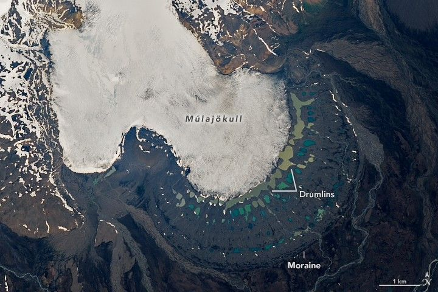

Múlajökull Glacier and Its Palette of Lakes
In contrast with the snow-covered landscape of winter, Iceland in spring and summer reveals areas of vivid color. One such site lies near Múlajökull, a surge-type piedmont glacier bordered by lakes that resemble an artist’s vibrant palette.
The OLI (Operational Land Imager) on Landsat 8 acquired these images on June 14, 2025. The Múlajökull glacier (shown above) flows from the southeastern side of Hofsjökull, Iceland’s third-largest ice cap, visible in the wider view below.
Surge-type glaciers experience episodes of intense, rapid ice flow that interrupt longer periods of calm, or quiescence, when ice movement slows or stagnates. Múlajökull has surged eight times since 1924. In 2025, however, the glacier was in a quiescent phase and retreating at its terminus.
A wider view of the scene shows the glacier descending from the bottom-right edge of a large, white ice cap. The ice cap spans the center of the image and is surrounded by a brown landscape dotted with blue-green lakes and patches of white snow.
The repeated advance and retreat of glacial ice has left clear imprints on the landscape. Periods of surging formed terminal moraines—ridges of debris pushed forward by the glacier and deposited at its front. The outermost moraine visible here likely formed between 1717 and 1760, when the glacier reached its maximum extent during the Little Ice Age.
As the glacier retreated, it exposed a field of drumlins—elongated hills shaped beneath the ice. According to Neal Iverson, emeritus professor at Iowa State University, drumlin fields revealed by modern glacial retreat are rare, making Múlajökull an important site for studying how these features form and evolve.
Iverson and colleagues have used a combination of field observations and computer modeling to suggest that the drumlins were created by uneven erosion of the underlying ground as the glacier slid over landscape irregularities, rather than by the deposition of sediment during ice movement.
As the glacier continued to retreat, colorful lakes formed in depressions between the drumlins. Natasha Lee, a glaciologist and remote sensing expert at Northumbria University, has studied lakes across Iceland and explains that their color differences reflect varying sediment concentrations in the water.
Lakes closest to the glacier are typically younger and receive sediment-rich meltwater, giving them a brown appearance. Lakes farther from the glacier are older and contain less suspended sediment, making them appear blue. Exceptions include several older, dark-green lakes where algae and vegetation have developed, as well as a few distant brown lakes fed by sediment-laden proglacial streams.